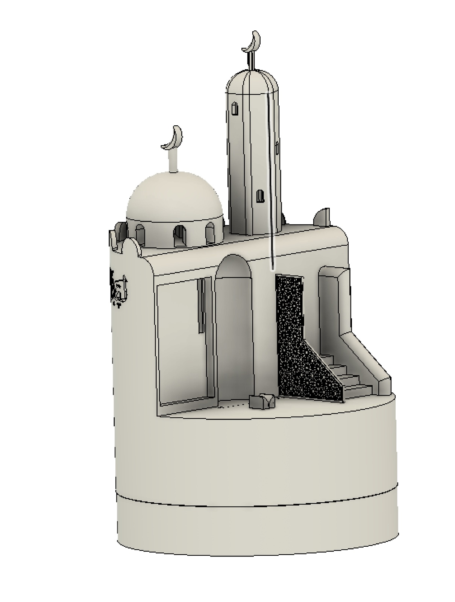
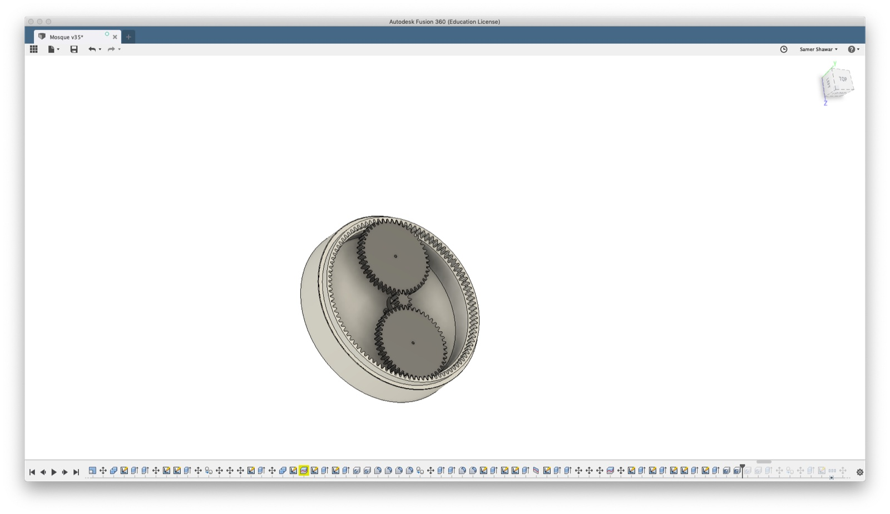

Work / Robotics / Siegen × Waseda research
Religious Robot
A joint research project between Universität Siegen and Waseda University, Tokyo, exploring robots for religious practice. The Islamic robot, third in the collection, is designed for immigrants and refugees: helping them integrate into new societies while preserving religious and cultural identity.

Identity is the hardest thing to pack
For people who have recently moved to non-Muslim countries, many as refugees, daily religious practice loses its infrastructure: the call to prayer, the qibla direction, the communal rhythm. The research asked whether a domestic robot could help preserve religious and cultural identity while its owners build a life in a new society.
Qualitative data was collected to understand the religion deeply and to surface the real needs of immigrants and refugees, the design followed the data, not assumptions about it.
Reverence built into the mechanism
I designed the 3D model and the interaction of the robot around restraint, no cartoon face, no chatter, just quiet competence in the rituals that matter:
- An integrated screen carries content without turning the object into a gadget.
- Touch sensors hidden beneath the model of the holy book: interaction begins with the same gesture as practice.
- A rotating mechanism orients the robot toward Mecca, so users always know the direction of prayer.


The robot doesn’t perform the ritual, it points the way and steps back. That humility is the interaction design.design stance
Research across two continents
As the third robot in the Siegen-Waseda collection, the project contributes a designed, buildable artifact to an open research question: how technology can serve cultural continuity rather than erode it. It is also the project where my fabrication practice and my academic practice meet most directly.